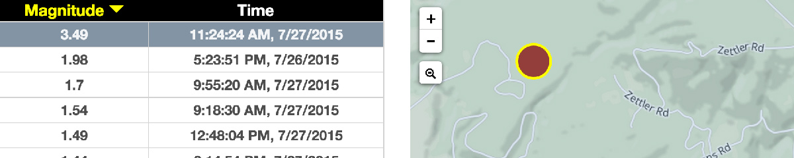
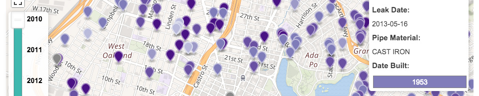
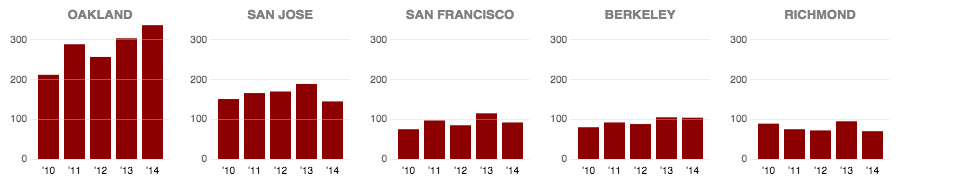
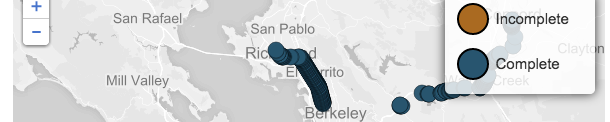
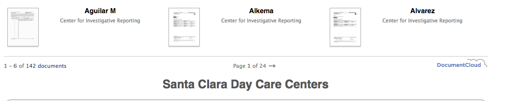
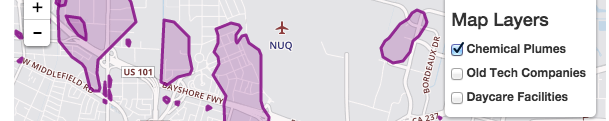

FrameShift
I started this blog at NBC Bay Area to showcase some of my less tv-centric data visualizations and to provide a venue for deeper dives into investigative stories.
Bay Area Quake Map

This map accesses the USGS API to bring an always up-to-date view of earthquakes in the immediate Bay Area. User interactions on the table update the map’s view and vice-versa.
Animated Same-Sex Marriage Map
An animated “square-bin” style country choropleth that shows changing laws on same-sex marriage across states. The binning reduces some visual bias by equalizing the size of each state. The animated slider shows the change over time.
How Militarized Are California Police?
This story analyzes a huge federal dataset that indicates how much military gear each state has obtained through the “1033” Department of Defense program. Features an interactive map and an interactive chart, both in D3.js.
Map: Water Main Leaks in the Bay Area

This month-long investigation into drinking-water infrastructure required several public records requests for geographic data. The map has many features for data exploration including a search box with on-the-fly geolocation and a range slider to subset the data.
The Leakiest Cities in the Bay

This collection of “small multiples” provides easy comparison across two categories: place and year. The bar charts, written in D3.js, are “linked”, allowing mouse events in one chart to produce effects in all the others.
Many Columns Supporting Bay Area Roads Still Need Retrofitting

This story was part of a week-long infrastructure investigation into earthquake safety. Features a complex map with many layers written in Mapbox.js and D3.js.
How Bad is Voter Turnout in California?
This story attempts to demystify voter turnout numbers and puts California’s somewhat low turnout in an critical context. Features two graphics in D3.js and was produced on a quick turnaround.
Planes are Striking More Birds, More Often

This story expands on the reporting the Investigative Unit began on the danger wildlife can pose near airports. Features two interactive charts in D3.js.
Silicon Valley’s Body Shop Secret
This story is part of a year-long investigation into Silicon Valley labor practices by the NBC Bay Area Investigative Team and the Center for Investigative Reporting. Features data obtained through a web scraper I wrote in Python, and a small, interactive map in D3.js. Required a FOIA request and significant data cleaning using CSVkit, SQL and Open Refine.
Bay Area Daycares

This story was produced in partnership with the Center for Investigative Reporting. We scanned and analyzed thousands of records by hand to create a searchable database of daycare records.
The Chemical Legacy of Old Silicon Valley

This story examines the many chemical plumes that dot the landscape of Silicon Valley. Features an interactive map of plume regions using Leaflet.js.
Database: Top 100 California Companies by Wage Claims

A searchable database of the top 100 worst-offending California companies by wage-claim. Built with my fork of Chris Keller’s well-known tabletop-to-datatables.
Drone Close Calls
This story investigates the “close calls” pilots report experiencing with UAVs in navigable airspace. Features a searchable table written in javaScript and a combined map/slideshow made with Odyssey.js.
What Palo Alto Police Say About NBC Investigation Into Quotas and Whistleblower Concerns
In this document-heavy story I take a deep dive into over 800 pages of internal police emails requested by the NBC Bay Area Investigative Unit. I describe the narrative of the Palo Alto Police Department’s response to a whistleblower investigation and uncover evidence that the department was internally confused about whether or not quotas were in effect.